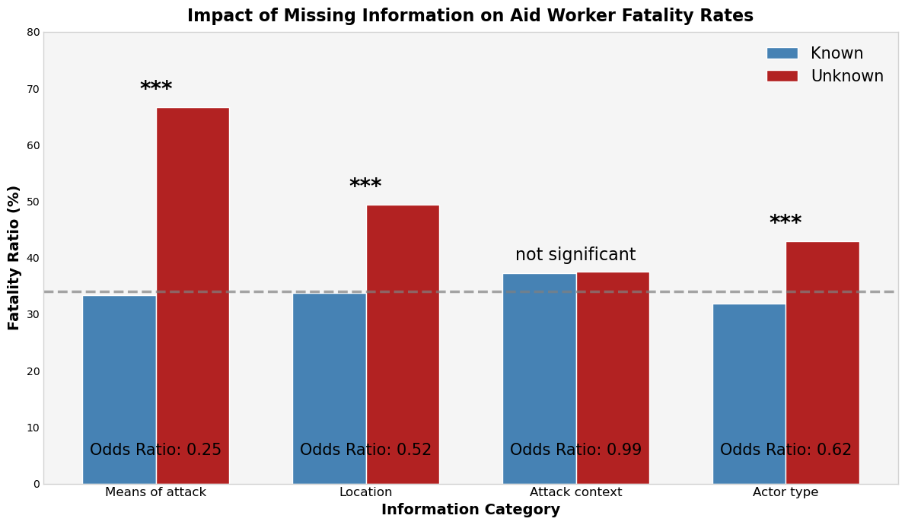
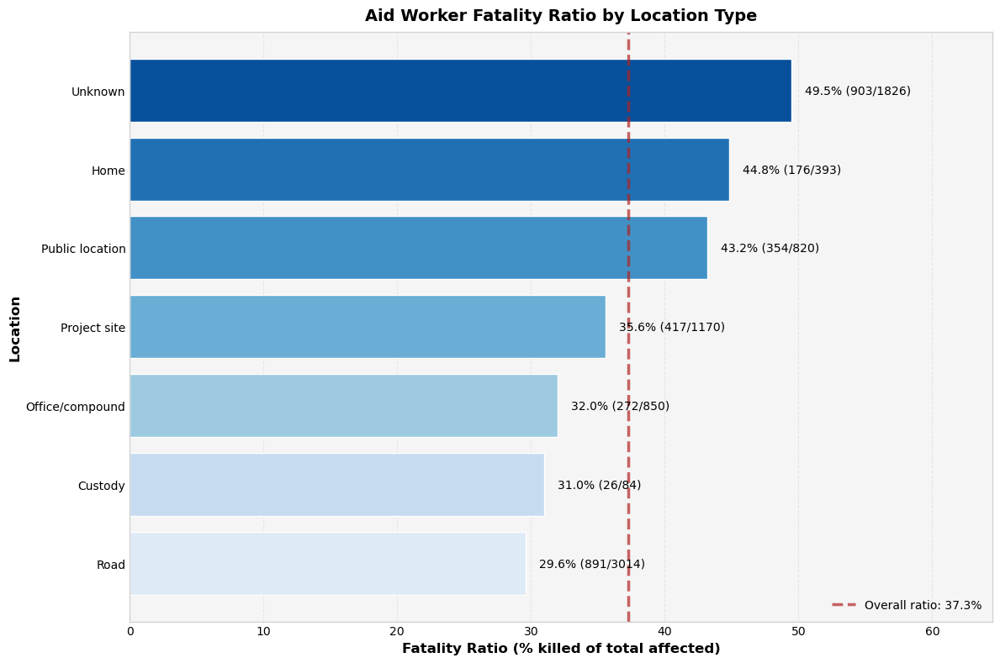

Risk Factors for Severe Aid Worker Attacks: Informing Protective Policy Measures
2024 marked the deadliest year ever recorded for humanitarian workers. The loss is staggering, and the trend shows no signs of slowing down. (2024)
Motivation
Aid workers are risking their lives every day to help others, often in the world’s most dangerous places. As violence against them continues to grow, protecting them is not just a challenge. It is a responsibility that demands attention. Press play to see how danger has spread, year by year.
This map tells a story that is hard to ignore. Over the years, attacks on aid workers have not just continued, they have become more intense and widespread. We are not only seeing where these incidents take place, but also how certain areas have turned into long-term hotspots of violence. The number of workers killed is at an all time high. This raises important questions. Why are some places becoming more dangerous? What can be done to change that?
In this project, I explore the Aid Worker Security Database (AWSD) to better understand the patterns behind these attacks. Through visualizations and statistical analysis, I highlight the factors most linked to fatal outcomes and identify where the greatest risks are. The goal is to turn those insights into action by offering clear and focused recommendations that can help protect aid workers in the places where they are most needed.
The Data
The Aid Worker Security Database (AWSD) is an event-based dataset that records detailed information about attacks on aid workers around the world. Each row represents a single incident as the unit of analysis, allowing analysis of patterns across events. Key fields include:
- Identification and Timing: Incident ID, Year, Month, Day
- Geographic Information: Country Code, Country, Region, District, City, Latitude, Longitude
- Organizational Involvement: UN, INGO, ICRC, NRCS and IFRC, NNGO, Other
- Casualties and Impact: Nationals killed, wounded, kidnapped; Internationals killed, wounded, kidnapped; Total nationals, Total internationals, Total killed, Total wounded, Total kidnapped, Total affected
- Demographic Details: Gender Male, Gender Female, Gender Unknown
- Attack Characteristics: Means of attack, Attack context, Location, Motive, Actor type, Actor name, Details
- Verification and Source: Verified, Source
Overall, the AWSD data offers rich detail on the where, when, and how of attacks on aid workers. It is especially useful for understanding patterns in incident severity, assessing risk by location or organizational affiliation, and supporting evidence-based policy recommendations to improve the safety and security of humanitarian personnel.
Data Cleaning and Feature Engineering
Data munging was required to standardize the data for analysis. First, I removed rows lacking geographic coordinates by dropping any entries missing longitude or latitude. Next, I cleaned key text columns by replacing missing values in categorical features with “Unknown” and normalizing fields by standardizing spelling, correcting capitalization, and trimming whitespace. Next, I created a binary indicator called “Fatal” to mark incidents as fatal when any fatalities occurred. Within features, I will calculate the fatality rate using total killed divided by total affected to understand the severity of categories. In addition, I combined the year, month, and day fields into a single date column. Finally, I engineered new features to capture the impact on groups of aid workers by calculating the proportion of international staff, national staff, male, female, and unknown genders affected in each incident. I also created a variable to understand the number of aid groups (UN, NGO, etc) involved in the incident. New features: Fatal, Date, Organizations Involved, % International affected, % National affected, % Male affected, % Female affected, % Unknown affected, Fatality Rate
Geography Deep Dive
Question: How does the severity of these incidents manifest across the globe?
Spread of Severity
Implications: This severity heatmap highlights clear hotspots where attacks on aid workers are both frequent and severe. By visualizing the geographic concentration of high-risk areas, decision-makers can see where security resources, training, and contingency planning are most urgently needed. The map also reveals how risk patterns may overlap with ongoing conflicts or politically unstable regions, indicating where aid operations might face the greatest challenges.
Policy Considerations: Agencies and governments can use this heatmap to guide protective measures in the most affected areas. It also emphasizes the importance of localized risk assessments, since nearby regions may experience vastly different threat levels. Coordinated efforts among aid organizations, local authorities, and international bodies are crucial to develop targeted strategies for mitigating severe incidents in these high risk zones.
Country-level fatality rates
Implications: This chart shows the relationship between how often aid worker incidents occur and how lethal those incidents tend to be. Countries positioned to the right have a high frequency of incidents, while those above the dashed line exceed the average fatality rate. Afghanistan combines frequent attacks with a slightly high than average fatality rate, indicating a particularly urgent need for security measures. Meanwhile, places like the Occupied Palestinian Territories appear less frequently in number of incidents but has an extremely high fatality rate, suggesting that when incidents do occur there, they are more likely to be fatal.
Policy Considerations: Decision makers should prioritize security investments where both the frequency of attacks and the likelihood of fatalities are greatest. In high frequency countries, policies should include ongoing security protocols, protective infrastructure, and real time intelligence to reduce repeated attacks. In places with more lethal incidents, targeted training and specialized response teams can help reduce the high mortality risk. Overall, combining frequency and severity data ensures that interventions are adapted to the specific threat profile of each country.
Attack Deep Dive
Question: How are attacks on aid workers are most commonly carried out?
Implications: The fact that “Unknown” and “Incidental” categories make up a large share suggests that the reasons behind these incidents are more complex than they appear. It may be that attackers are deliberately more obscure now, mixing motives or hiding their true intentions. This complexity means that current categories might not fully capture what is really driving these events.
Policy Considerations: In light of these trends, policy responses should do more than just improve data collection. Strategies need to be flexible enough to deal with overlapping or hidden motives, especially if attackers are purposely making their aims less clear. This can ensure that policies stay current and effective in addressing these challenges.
Most Common Attack Methods
Implications: From these charts, shooting and kidnapping emerge as the most frequent means of attack, while roads are the most common setting for these incidents. Additionally, ambushes dominate the attack context, suggesting a high level of premeditation and vulnerability in transit. With greater awareness of these patterns, targeted protective measures and training for these scenarios can be implemented to reduce the risk of high-severity incidents.
Policy Considerations: An alarming takeaway is the high number of “Unknown” entries across all three categories. Unknowns in all three features contain extremely high fatality rates. These gaps in reporting make it difficult to fully understand the circumstances and risks surrounding many incidents. In the next section, we take a closer look at these unknowns.
Digging into the Unknown
Question: Are features labeled “Unknown” a signal of worse outcomes?
Fisher’s exact test on the “unknown” versus “known” information groups lets us precisely calculate the probability that observed differences in fatality rates occurred by chance alone. This reveals whether incidents with missing information categories are systematically more deadly, providing statistical confidence in our findings even with uneven sample sizes, and strengthening the case for improved reporting protocols and targeted safety interventions.
| Information Category | Known Entries | Unknown Entries | Odds Ratio | p-value | Significance |
|---|---|---|---|---|---|
| Means of attack | 3,820 incidents 33.38% fatality |
504 incidents 66.70% fatality |
0.25 | <0.0001 | *** |
| Location | 3,350 incidents 33.74% fatality |
974 incidents 49.45% fatality |
0.52 | <0.0001 | *** |
| Attack context | 3,595 incidents 37.21% fatality |
729 incidents 37.51% fatality |
0.99 | 0.8497 | ns |
| Actor type | 2,059 incidents 31.92% fatality |
2,265 incidents 42.98% fatality |
0.62 | <0.0001 | *** |
Visualizing the results:

Implications: This analysis shows that missing information in attack records is strongly linked to higher death rates among aid workers. When the method of attack is unknown, the fatality rate is nearly double, a difference that is likely not due to chance. Similar patterns appear when the location or the attackers are unknown. Only when the attack context is unknown do we see no meaningful difference in fatality rates. While the analysis assumes independence between observations and some incidents may share contextual factors, the strong pattern seen across different types of missing information strongly suggests this relationship is real and important for protecting aid workers.
Policy Considerations: These results are important: when information is missing, it often signals a more dangerous situation. For aid organizations, this means security planning should treat “unknowns” as red flags. When developing safety protocols, officials should give extra attention to incidents where the attack method or location details are unclear. Organizations should also work harder to document incidents thoroughly, not just for record keeping but as a critical safety measure. Better information collection could save lives by helping identify the most dangerous patterns and circumstances.
Location breakdown
Question: Are certain locations linked to more deadly outcomes?
A chi-square test of independence for location and fatal outcomes examines whether the proportion of fatal incidents differs significantly across various location categories.
| Chi-Sq | p-value | DF |
|---|---|---|
| 91.914 | 1.212e-17 | 6 |
Visualizing the results:

Implications: The p-value is well below 0.05 so we can reject the null hypothesis in favor of the alternative hypothesis. This indicates that fatal outcomes are not randomly distributed by location and certain locations may be associated with higher or lower fatality rates. This confirms earlier concerns around the “Unknown” category. “Home” also stand out, with a notably high fatality rate of nearly 50%. These insights suggest that specific environments, especially those with limited visibility or weaker structural security, may pose greater risks to aid workers.
Policy Considerations: Aid agencies should consider enhancing residential safety through options like designated safe zones, secure housing arrangements, and the installation of modern security systems (alarms, CCTV). While full implementation may not always be feasible, establishing standardized emergency protocols and strengthening rapid response systems can offer vital protection and reduce the likelihood of fatal outcomes.
How these attacks are carried out
Question: Are certain means of attack associated with certain attack contexts in certain locations?
Implications: From the heatmap, ambush contexts on the road most frequently involve both kidnapping and shooting, suggesting that ambushes tend to be coordinated attacks on victims while they are traveling. In contrast, individual attacks in the home or public locations often feature shooting or bodily assault. These patterns highlight two dominant scenarios which may require different security measures and training to mitigate the associated risks.
Policy Considerations: Since many attacks involve ambushes with kidnapping or shooting, aid agencies should focus on making travel safer. This could include securing travel routes, protecting convoys, and gathering information before trips to avoid planned attacks. Meanwhile, the high number of individual attacks involving bodily assault or shooting suggests a need for personal safety measures. These could include self-defense training, better communication tools, and working in pairs to stay safe. Overall, awareness of these situations can bring tailored security strategies to help reduce both group ambushes and attacks on individuals.
Victim Deep Dive
Question: Are certain staff types disproportionately targeted or more vulnerable?
Gender Deconstruction
Question: Do certain genders face more risk?
Implications: This is an interesting finding that there seems to be an inverse relationship between male and unknown gender proportions. This points to a serious data quality problem rather than a true demographic shift. It appears that when reporting standards decline, incidents involving male workers are more likely to be misclassified as “unknown.” Although female representation consistently remains low, around 5 to 10 percent, the sharp swings between male and unknown categories suggest systematic reporting biases that may hide the real risks for each gender.
Policy Consideration: This has important implications for humanitarian organizations. They need to standardize gender documentation across all field operations, invest in data quality assurance like mandatory gender fields, and adjust security training to address both the persistent minority status of female workers and the challenges posed by reporting inconsistencies. Without addressing these issues, security policies might be based on flawed assumptions instead of reflecting actual conditions on the ground.
Implications: The gender distribution of casualties across different attack methods reveals trends that have serious security implications. Male aid workers are predominantly affected by shootings, bodily assaults, shelling, and kidnap-killing, while female workers suffer disproportionately from rape and sexual assault. In addition, the large percentage of cases with unrecorded gender in aerial bombardment and unknown attack methods points to significant reporting challenges during large scale or chaotic incidents. The similar distribution between male and unknown victims in kidnapping and roadside IED attacks suggests that inconsistencies in documentation may be obscuring the true extent of risk for both genders.
Policy Considerations: Organizations should develop gender specific security protocols that address these distinct vulnerabilities. For female aid workers, this means putting stronger sexual violence prevention measures in place and ensuring timely support when such incidents occur. For male aid workers, targeted training that focuses on survival strategies in high intensity scenarios like shootings and assaults. Similary to other features, improving documentation practices, especially in complex and rapidly unfolding incidents, is essential to gain a complete understanding of vulnerability patterns.
Separating Staff Type
Question: How can each organization prepare?
Implications: The scatter plot reveals significant disparities in fatality rates between national and international staff across humanitarian organizations. The ICRC, NRCS/IFRC, NNGO, and Others show that national staff are almost twice as likely to suffer fatal outcomes compared to international staff, while UN and INGOs have more balanced risk profiles. The large bubble sizes for organizations with high total casualties can either indicate larger operations or consistently more dangerous environments.
Policy Consideration: These disparities call for organizations to develop security measures that specifically address the heightened risks faced by national staff. Organizations like the ICRC and NRCS/IFRC should work towards reducing these dangerous gaps. Rather than basing security solely on whether staff are national or international, resources should be allocated according to the actual level of risk. Additionally, it’s vital to reexamine localization strategies to ensure that shifting responsibilities to national staff does not inadvertently expose them to greater danger.
Machine Learning
In order to understand the complex factors that contribute to severe incidents for aid workers, I trained a Gradient Boosting classifier to analyze how different incident characteristics correlate with fatality risks. By developing this predictive model, I aimed to provide data-driven insights that can potentially inform safety strategies and resource allocation.
Classification report: - The final model demonstrated strong predictive capabilities, achieving an overall accuracy of 79% - Precision and recall balanced around 0.80 for both fatal and non-fatal incident classes - Weighted F1-score of 0.79, indicating consistent predictive power across incident types
Feature Importance:

The feature importance analysis reveals critical insights into aid worker security risks. Kidnapping emerges as the most significant predictor, suggesting that the method of attack provides crucial context for potential severity, even if it doesn’t directly correlate with fatality rates. Bodily assault and shooting follow as key predictive features, indicating that direct physical confrontations are central to understanding incident risks. Economic motives and combat/crossfire contexts also play substantial roles, highlighting how the underlying political and economic dynamics of a region can significantly influence vulnerability. The prominence of attack type and context in the model suggests that understanding the structural and situational factors surrounding an incident is often more predictive than individual characteristics, highlighting the complex nature of risks faced by humanitarian workers.
Following model development, I translated the trained machine learning model into an interactive Shiny web application. This tool allows users to input incident characteristics and receive real time fatality risk predictions.
This tool offers a data-driven approach to understanding and mitigating risks facing aid workers. By analyzing multiple incident characteristics such as attack type, location, and victim demographics, the tool provides organizations with insights that extend beyond retrospective analysis. Its value lies not in predicting a specific incident, but in helping organizations develop more nuanced risk assessment strategies, allocate protective resources more effectively, and understand the structural factors that contribute to worker vulnerability. While no predictive model can eliminate risk entirely, this approach represents a step towards a more proactive, evidence-based approach to aid worker safety.
Key Takeaways
Attacks on humanitarian workers have grown both in frequency and lethality, with the most significant impacts seen in specific geographic hotspots in recent years. The data reveals that ambiguity in reporting, especially with the “Unknown” categories often aligns with higher fatality rates. This pattern, combined with regional disparities and the predictive insights from machine learning models, indicates a pressing need for targeted security measures, improved data collection, and adaptive risk assessment strategies.
Key Takeaways:
- Geographic Concentration: High-risk regions and hotspots such as Afghanistan and Palestine demand focused security investments and rapid response systems.
- Severity Disparities: Certain regions and attack methods correlate with significantly higher fatality rates, highlighting the urgency of localized safety protocols.
- Predictive Insights: Machine learning models highlight key predictors, such as kidnapping and direct physical assaults, that inform severe outcomes, offering data-driven insights for intervention.
- Data Quality Issues: Gaps in reporting are linked to increased fatality risks, emphasizing the need for standardization in documentation.
Further Work and Considerations: Future efforts should focus on enhancing data collection and integrating real-time monitoring to quickly identify emerging risks. Strengthening communication between agencies and conducting localized risk assessments will be critical to developing adaptive security strategies. Further research into the factors driving regional differences in incident severity is essential, as doing so is vital to saving the lives of those who risk everything to help others.